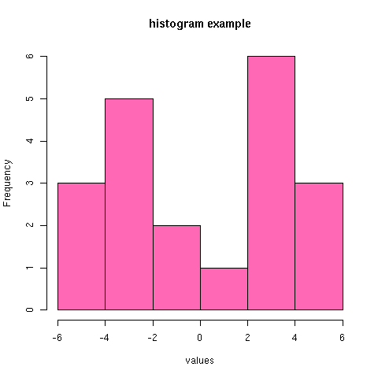
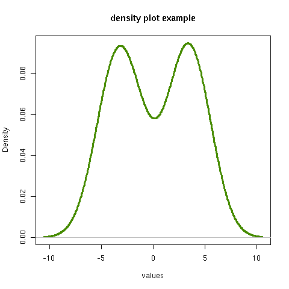
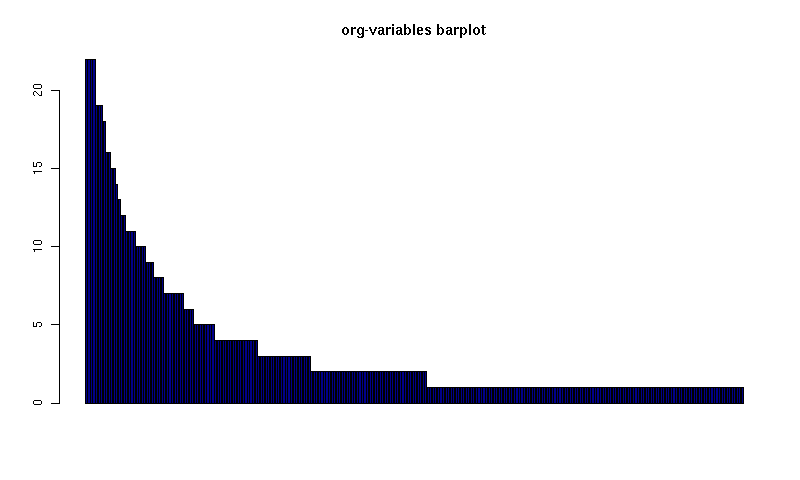
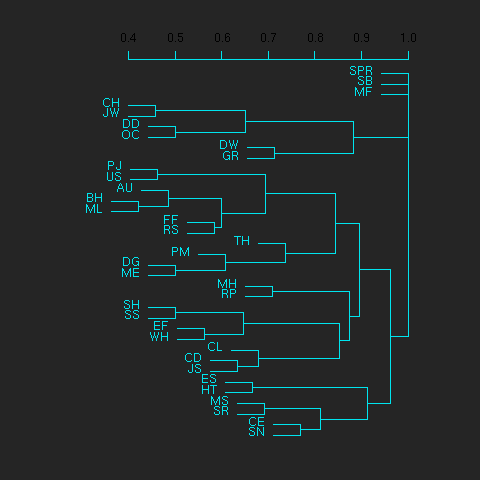
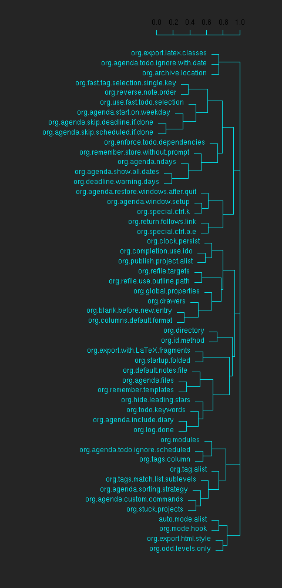
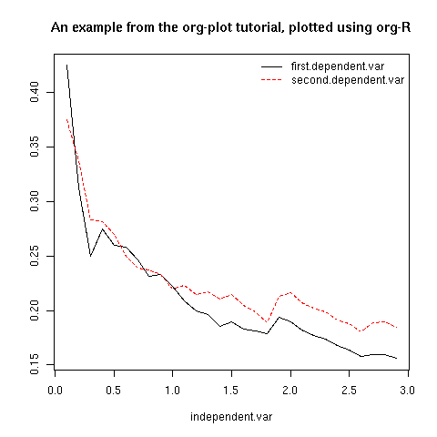

org-R: Computing and data visualisation in Org-mode using R
Table of Contents
Introduction
org-R is an org-mode extension that performs numerical computations and generates graphics. Numerical output may be stored in the org buffer in org tables, and the input can also come from an org table. Rather than starting off by documenting everything systematically, I’ll provide several commented examples. Towards the end there are lists of available actions and other options.
Although, behind the scenes, it uses R, you do not need to know anything about R. Common operations are provided `off the shelf’ by specifying options on lines starting with #+R:. Having said that, org-R also accepts raw R code (#+RR: lines). For those who don’t yet know R, but think they might be interested, try the showcode:t option. It displays the R code corresponding to the action you requested, and so provides a good starting point for fine-tuning your analysis. But that’s getting ahead of things.
My hope is, of course, that this will be of use to people. So at this stage any comments, ideas, feedback, bug reports etc would be very welcome. I’d be happy to help anyone that’s interested in using this, via the Org mailing list.
If you’d like to try out these commands yourself, the Org file that created this web page is @<a href=“org-R.org”>here@</a>.
Setting things up
The code is currently here Soon it will be in the contrib directory. The other things you need are R (Windows / OS X binaries available on the R website widely available in linux package repositories) and the emacs mode Emacs Speaks Statistics (ESS). ESS installation instructions are here. Personally, under linux, I have something like
(add-to-list 'load-path "/path/to/ess/lisp") (require 'ess-site)
Using org-R
org-R uses two different option lines to specify an analysis/plot: #+R: and #+RR:. #+RR: is the one that accepts R code, so we’ll ignore that for now. To make the action happen, use M-x org-R-apply with point in the #+R: line. That’s the only function you need, and it would make sense to bind it to some key. So, first example.
Computing on org tables: tabulating values
Here’s a command to tabulate the values in the second column. Issue M-x org-R-apply in the following #+R line.
| col1 | col2 | |------+------| | A | A | | A | B | | B | B | #+R: action:tabulate columns:2
That results in
| value | count | |-------+-------| | A | 1 | | B | 2 |
. So the values in column 2 were tabulated as requested. However, the original data got overwritten. That leads us to
Table references
We can specify input data for analysis/plotting in 3 different ways:
- by providing a reference to an org table with the intable: option. You can optionally specify the file that the table is in with the infile: option;
- by pointing it to a csv file, locally or via http:, using infile:/path/to/file.csv or infile:http://somewhere/file.csv
- by doing neither, in which case it looks for a table immediately above the #+R(R) line(s).
Case (3) is what happened above – the input data came from a table immediately above the #+R line. The default behaviour is to replace any such table with the output; this allows us to tweak the option line and update the analysis. However, normally we’ll want to separate the data from the analysis output. So let’s keep the data as a named table in the org file, and refer to it by name:
#+TBLNAME:data-set-1 | col1 | col2 | |------+------| | A | A | | A | B | | B | B | [arbitrary other content of org buffer] #+R: intable:data-set-1 action:tabulate
which results in
| | A | B | |---+---+---| | A | 1 | 1 | | B | 0 | 1 |
Note that this time we did a different analysis: I removed the columns:2 option, so that tabulate was passed the whole table. As a result the output contains counts of joint occurrences of values in the two columns: out of the 4 possibilities, the only one we didn’t observe was “B in column 1 and A in column 2”. We could have achieved the same result with columns:(1 2). (But don’t try to tabulate more than 2 columns: org does not do multi-dimensional tables).
Plotting data
Available off-the-shelf plotting commands
At the risk of this starting to sound like a bad and boring undergraduate statistics textbook, the sort of plots that are appropriate depend on the sort of data. Let’s divide it up as
- discrete-valued data [e.g. data-set-1 above, or the list of org variables customised by users]
- continuous-valued data [e.g. the wing lengths of all Eagle Owls in Europe]
- indexed data [e.g. a data set in which each point is a time, together with the size of the org source code base at that time]
The available off-the-shelf actions are listed here.
Continuous data example:
We’re going to need some data. So let’s prove that org can also speak statistics and use org-R to simulate the data. This requires some raw R code, so skip this bit if you’re not interested.
The following #+RR line simulates 10 values from a Normal distribution with mean -3, and 10 values from a Normal distribution with mean 3, and lumps them together. The point is that the numbers we get should be concentrated around two different values, and we should be able to see that in a histogram and/or density plot.
#+RR: x <- c(rnorm(10, mean=-3, sd=1), rnorm(10, mean=3, sd=1)) #+R: title:"continuous-data" output-to-buffer:t
Here’s what I got. Note that the title: option set the name of the table with “#+TBLNAME”; we’ll use that to refer to these data.
#+TBLNAME:continuous-data | values | |-------------------| | -2.48627002467785 | | -4.0196287273144 | | -3.43471960580471 | | -5.21985294534255 | | -3.84201126431028 | | -1.72912705369668 | | -2.86703950990613 | | -2.82292622464752 | | -4.43246430621368 | | -1.03188727658288 | | 0.882823532068805 | | 3.28641606039499 | | 3.56029698321959 | | 2.91946660223152 | | 2.32506089804876 | | 3.3606298511366 | | 5.19883523425104 | | 4.86141359164329 | | 2.90073505260204 | | 4.21163939487907 |
Now to plot the data. Let’s have some colour as well, and this time the title: option will be used to put a title on the plot (and also to name the file link to the graphical output).
[[file:tmp.png][histogram example]] #+R: action:hist columns:1 colour:hotpink #+R: intable:continuous-data outfile:"png" title:"histogram example"

[Note that you can use multiple #+R lines rather than cramming all the options on to one line.]
An alternative would be to produce a density plot. We don’t have enough data points to justify that here, but we’ll do it anyway just to show the sort of plots that are produced. This time we’ll specify the output file for the png image using the output: option. (For the histogram we used output:“png”. That’s a special case; it doesn’t create a file called “png” but instead uses org-attach to store the output in the org-attach dir for this entry. Same thing for the other available output image formats: “jpg”, “jpeg”, “pdf”, “ps”, “bmp”, “tiff”)
[[file:density.png][density plot example]] #+R: action:density columns:"values" colour:chartreuse4 args:(:lwd 4) #+R: intable:continuous-data outfile:"density.png" title:"density plot example"

There were a couple of new features there. Firstly, I referred to column 1 using its column label, rather than with the integer 1. Secondly, note the use of the args: option. It takes the form of a lisp property list (“p-list”), specifying extra arguments to pass to the R function (in this case density()). Here we used it to set the line thickness (lwd=4).
Discrete data example: the configuration variables survey
The raw data, as collected by Manish, are in a table called org-variables-table, in a file called variable-popcon.org. We use the file: option to specify the org file containing the data, and the table: option to specify the name of the table within that file. [An alternative be to give the entry containing the table a unique id with org-id-get-create, refer to it with table:<uid>, and rely on the org-id mechanism to find it.].
Now we tabulate the data. (We’re not currently taking the sensible step that Manish did of checking whether the variables were given values different from their default).
Rather than cluttering up this org file with all the count data, we’ll store them in a separate org file:
#+R: action:tabulate columns:2 sort:t #+R: infile:"variable-popcon.org" intable:"org-variables-table" #+R: outfile:"org-variables-counts.org" title:"org-variables-counts"
We can see the top few rows of the table by using action:head
| rownames(x) | value | count | |-------------+-----------------------------+-------| | 1 | org-agenda-files | 22 | | 2 | org-agenda-start-on-weekday | 22 | | 3 | org-log-done | 22 | | 4 | org-todo-keywords | 22 | | 5 | org-agenda-include-diary | 19 | | 6 | org-hide-leading-stars | 19 | #+R: action:head #+R: infile:"org-variables-counts.org" intable:"org-variables-counts" output-to-buffer:t
Here’s a barplot of the counts. It makes it clear that over half the org variables are customised by only one or two users.
[[file:org-variables-barplot.png][org-variables barplot]] #+R: action:barplot rownames:t columns:1 width:800 col:darkblue #+R: args:(:names.arg "NULL") #+R: infile:"org-variables-counts.org" intable:"org-variables-counts" #+R: outfile:"org-variables-barplot.png" title:"org-variables barplot"

Something more complicated: clustering org variables, and org users
OK, let’s make a bit more use of R’s capabilities. We can use the org-variables data set to define distances between pairs of org users (how similar their customisations are), and distances between pairs of org variables (the extent to which people who customise one of them customise the other). Then we can use those distance matrices to cluster org users, and org variables.
First, let’s create a table that’s restricted to variables that were customised by more than four users. This isn’t necessary, but there are a lot of org-variables! This is going to require a bit of R code to count the variables and then subset the raw data accordingly:
[[file:variable-popcon-restricted.org][org-variables-table]] #+R: infile:"variable-popcon.org" intable:"org-variables-table" #+R: outfile:"variable-popcon-restricted.org" title:"org-variables-table" #+RR: tab <- table(x[,2]) #+RR: x <- subset(x, Variable %in% names(tab[tab > 4]))
Now let’s make a table with a row for each variable, and a column for each org user, and fill it with 1s and 0s according to whether user j customised variable i. We can do that without writing any R code:
[[file:org-variables-incidence.org][incidence-matrix]] #+R: action:tabulate columns:(1 2) rownames:t #+R: infile:"variable-popcon-restricted.org" intable:"org-variables-table" #+R: outfile:"org-variables-incidence.org" title:"incidence-matrix"
First we’ll cluster org users. We use the R function dist to compute a distance matrix from the incidence matrix, then hclust to run a hierarchical clustering algorithm, and then plot to plot the results as a dendrogram:
[[file:org-users-tree.png][org-users-tree.png]] #+RR: par(bg="gray15", fg="turquoise2") #+RR: plot(hclust(dist(x, method="binary")), ann=FALSE) #+R: infile:"org-variables-incidence.org" intable:"incidence-matrix" rownames:t #+R: outfile:"org-users-tree.png" title:"org-users-tree.png"

And to cluster org variables, we use the transpose of that incidence matrix:
[[file:org-variables-tree.png][org-variables-tree.png]] #+RR: par(bg="gray15", fg="turquoise2") #+RR: plot(hclust(dist(t(x), method="binary")), ann=FALSE) #+R: infile:"org-variables-incidence.org" intable:"incidence-matrix" rownames:t #+R: outfile:"org-variables-tree.png" title:"org-variables-tree.png" width:1000

Please note that my main aim here was to give some examples of using org-R, rather than to show how the org variables data should be mined for useful information! The org-variables dendrogram does seem to have made some sensible clusterings (e.g. the clusters of agenda-related commands), but I’m going to leave it to others to decide whether this exercise really served to do more than illustrate org-R. Does anyone recognise any usage affinities between the clustered org users?
Indexed data example
Let’s plot the same data as Eric Schulte used in the org-plot tutorial on worg.
[[file:/usr/local/src/org-etc/Worg/org-tutorials/org-R/data/45/f39291-3abc-4d5b-96c9-3a32f77877a5/org-R-output-8119M2O.png][An example from the org-plot tutorial, plotted using org-R]] #+R: action:lines columns:((1)(2 3)) #+R: infile:"../org-plot.org" #+R: intable:"org-plot-example-1" outfile:"png" #+R: title:"An example from the org-plot tutorial, plotted using org-R"

Table of available options
In addition to the action:<some-action> option (described here, the following options are available:
| Input options | |
|---|---|
| infile:/path/to/file.csv | input data comes from file.csv |
| infile:http://www.somewhere/file.csv | input data comes from file.csv somewhere on the web |
| infile:/path/to/file.org | input data comes from file.org; must also specify table with intable:<name-or-id> |
| intable:table-name | input data is in table named with #+TBLNAME:table-name (in same buffer unless infile:/path/to/file.org is specified) |
| intable:table-id | input data is first table under entry with table-id as unique ID. Doesn’t make sense with infile:/path/to/file.org |
| rownames:t | does first column contain row names? (default: nil). If t other column indices are as if first column not present – this may change) |
| colnames:nil | does first row contain column names? (default: t) |
| columns:2 columns:(2) | operate only on column 2 |
| columns:“wing length” columns:(“wing length”) | operate only on column named “wing length” |
| columns:((1)(2 3)) | (when plotting) plot columns 2 and 3 on y-axis against column 1 on x-axis |
| columns:((“age”)(“wing length” “fierceness”)) | (when plotting) plot columns named “wing length” and “fierceness” on y-axis against “age” on x-axis |
| Action options | |
| action:some-action | off-the-shelf plotting action or computation (see separate list), or any R function that makes sense (e.g. head, summary) |
| lines:t | (when plotting) join points with lines (similar to action:lines) |
| args:(:xlab “\”the x axis title\“” :lwd 4) | provide extra arguments as a p-list (note the need to quote strings if they are to appear as strings in R) |
| Output options | |
| outfile:/path/to/image.png | save image to file and insert link into org buffer (also: .pdf, .ps, .jpg, .jpeg, .bmp, .tiff) |
| outfile:png | save image to file in org-attach directory and insert link |
| outfile:/path/to/file.csv | would make sense but not implemented yet |
| height:1000 | set height of graphical output in (pixels for png, jpeg, bmp, tiff; default 480) / (inches for pdf, ps; default 7) |
| width:1000 | set width of graphical output in pixels (default 480 for png) |
| title:“title of table/plot” | title to be used in plot, and as #+TBLNAME of table output, and as name of link to output |
| colour:hotpink col:hotpink color:hotpink | main colour for plot (i.e. `col’ argument in R, enter colors() at R prompt for list of available colours.) |
| sort:t | with action:tabulate, sort in decreasing count order (default is alphabetical on names) |
| output-to-buffer:t | force numerical output to org buffer (shouldn’t be necessary) |
| inline:t | don’t name links to output (so that graphics are inline when exported to HTML) |
| Misc options | |
| showcode:t | Display a buffer containing the R code that was generated to do what was requested. |
Table of available actions
To specify an action from the following list, use e.g. action:hist on the #+R line.
| Actions that generate numerical output | |
|---|---|
| tabulate | count occurrences of distinct input values. Input data should be discrete. This is function table in R. |
| summary | summarise data in columns (minimum, 1st quartile, median, mean, 3rd quartile, max) |
| head | show first 6 rows of a larger table |
| transpose | transpose a table |
| Actions that generate graphical output | |
| Discrete data | |
| barplot | produces ’side-by-side’ bar plots if multiple columns selected |
| Indexed data | |
| plot | if only 1 column selected, index is automatic: 1,2,… |
| lines | same as plot |
| points | same as plot but don’t join points with lines |
| Continuous data | |
| hist | histogram |
| density | like a smoothed histogram (i.e. a curve) |
| Grid of values | |
| image | a grid image, with cells coloured according to their numerical values |
Apart from tabulate, the action: names are the same as the names of the R functions which implement them. `tabulate’ is really called `table’ in R.
Note that, in addition to the actions listed below, you can also use action:R-function, where “R-function” is the name of any existing R function. The function must be able to take a data frame as its first argument, and must not require any further arguments (i.e. any further arguyments must have suitable default values). Any numerical output will be sent to the org buffer (use output-to-buffer:t to force this, although if that is necessary then that is a bug).
More detailed description of org-R
My aim with org-R is to provide a fairly general facility for using R with Org. The #+R lines and #+RR lines together specify an R function, which may take numerical input, and may generate graphical output, or numerical output, or both.
If any input data have been specified, then the R function receives those data as its first argument. The input data may come from an Org table, or from a csv spreadsheet file. In either case they are tabular (1- or 2-dimensional). The input data are passed to the function as an R data frame (a table-like structure in which different columns may contain different types of data – numeric, character, etc). Inside the R function, that data frame is called ’x’. ’x’ is also the return value of the R function. Therefore the numerical output of org-R is determined by the modifications to the variable x that are made inside the function (any graphical output is a side effect.)
It’s worth noting that one mode of using org-R would be to write your own code in a separate file, and use the source() function on a #+RR line to evaluate the code in that file.
Numerical output of the function should also be tabular, and may be received by the Org buffer as an Org table, or sent to file in Org table or csv format. R deals transparently with multi-dimensional arrays, but Org table and csv format do not.
Unless an output file has been specified, graphical output will be displayed on screen.
The mapping from the #+R and #+RR lines to the R function may benefit from further thought; currently what happens is that code corresponding to the #+R line is generated, and then any explicit user code is appended to this. Thus the #+RR lines have the ’last word’ on the output. Since multiple, intermixed, #+R and #+RR lines can be given, it might make sense instead to follow the order of those lines when constructing the code.
Getting help with R
- Bring up an R prompt with R at a shell prompt, or M-x R in emacs (if you have installed ESS)
- Enter ?function.name for help on function `function.name’
- Enter RSiteSearch(“words”) for online help matching “words”
- Enter ?par to see the full list of graphical parameters
- Follow the Documentation link on the left hand side of the R website for “An Introduction to R”, and other more technical manuals.
Brief advert for R
Seeing as this has made use of R, I’ll briefly say my bit on it for those who are unfamiliar.
- It’s good for simple numerical work, as well as having implementations of a a very large range of more sophisticated mathematical and statistical procedures.
- It’s good for producing graphics quickly, and for fine tuning every last detail of the graphics for publication.
- It’s a syntactically reasonable, user-friendly, interpreted programming language, that is often used interactively (it comes with its own shell/command-line environment, and runs within emacs using ESS).
- It’s a good language for a functional style of programming (in fact I’d say that’s how it should be used), which might well appeal to elisp programmers. For example, you want to construct an arbitrarily nested data structure, then pass some function over the tips, returning a data structure of the same shape as the input? No problem (rapply).
- There’s a lot of add-on packages for it (CRAN link on left hand side of website.).
- How many programming languages will get their own article in the New York Times this year?